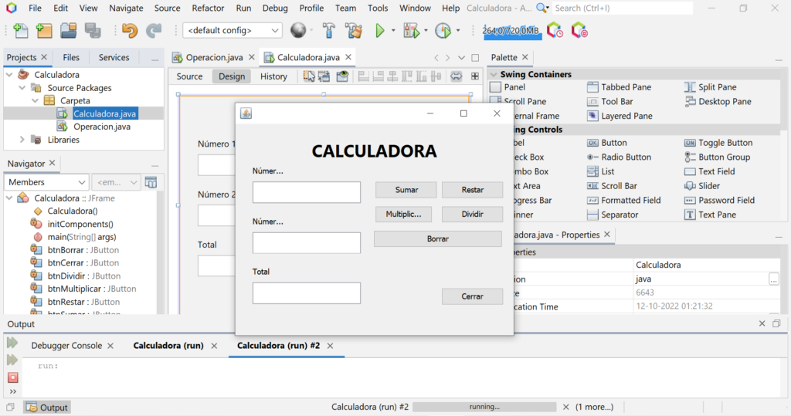

Proyectos
Calculadora
La Calculadora es una aplicación web intuitiva que permite realizar operaciones matemáticas básicas y avanzadas de manera rápida y precisa. Con un diseño limpio y fácil de usar, está pensada tanto para estudiantes como para profesionales que requieren realizar cálculos en su día a día.
Además de las operaciones básicas como suma, resta, multiplicación y división, la Calculadora incluye funcionalidades adicionales como cálculo de raíces cuadradas, potencias, y manejo de paréntesis para operaciones más complejas.
Tienda Online

La Tienda Online es una plataforma de comercio electrónico diseñada para ofrecer una experiencia de compra fluida y segura. Cuenta con una amplia variedad de productos tecnológicos, desde dispositivos electrónicos hasta accesorios, con un sistema de búsqueda avanzado y opciones de pago seguras.
El proyecto incluye un carrito de compras interactivo, reseñas de usuarios, y un panel de administración para gestionar productos y pedidos.
Resisafe

Resisafe es un innovador sistema de gestión diseñado específicamente para conjuntos residenciales. Este sistema facilita la administración de propiedades, permitiendo a los administradores gestionar de manera eficiente los servicios y necesidades de los residentes.
La plataforma también proporciona una interfaz amigable para los residentes, donde pueden acceder a información relevante, realizar solicitudes de servicio y comunicarse con la administración.
Underflower

Underflower es un videojuego de terror psicológico que sumerge a los jugadores en la mente perturbada de un niño que lucha por escapar de sus propios miedos y traumas.
Ambientado en un mundo oscuro y surrealista, el juego combina elementos de exploración, resolución de acertijos y una narrativa inmersiva para crear una experiencia inquietante y emocionante
Monitor Master
Monitor Master es una herramienta de software destinada a mejorar la productividad al monitorear y gestionar el tiempo de uso de aplicaciones específicas en el ordenador.
Esta aplicación permite a los usuarios establecer límites de tiempo para diferentes programas, así como bloquear aplicaciones que puedan ser una distracción durante el trabajo.
Buscaminas 3D

Buscaminas 3D es una versión renovada del clásico juego de lógica, ahora en tres dimensiones. Este proyecto ofrece una experiencia de juego inmersiva, desafiando a los jugadores a encontrar minas en un espacio tridimensional mientras evitan los peligros ocultos.
La interfaz intuitiva permite a los jugadores rotar, acercar y alejar el tablero 3D, proporcionando una visión completa del entorno.